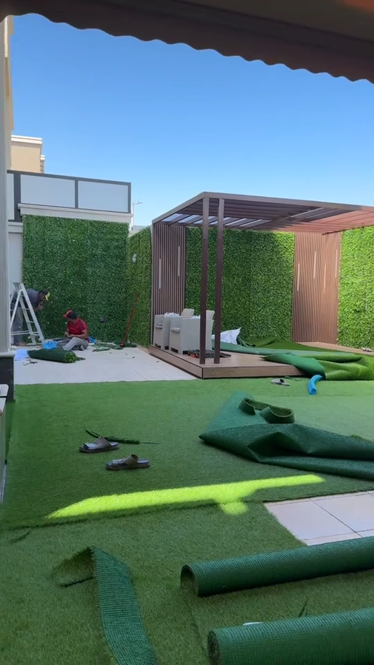
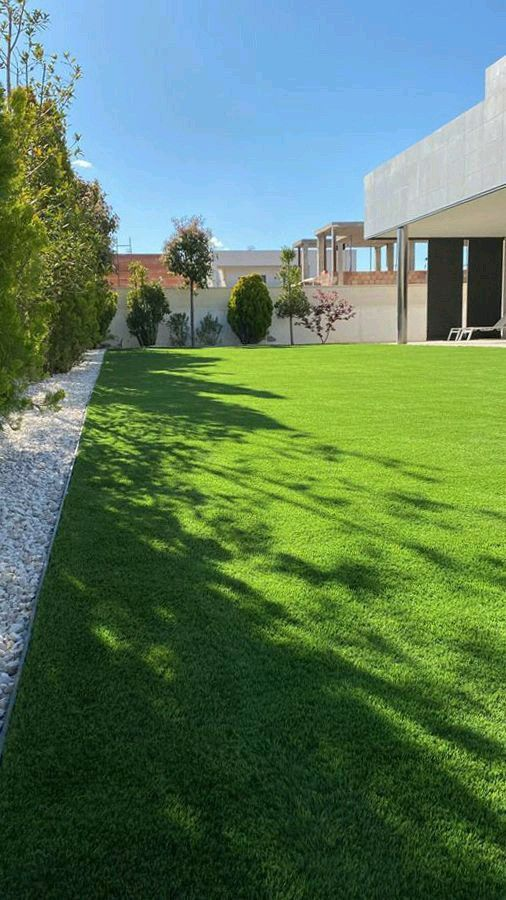

ملاعب العشب الصناعي أصبحت الخيار الأول للأندية والمدارس والاستراحات والمنازل في المدينة المنورة وينبع — فهي توفّر أرضية لعب آمنة وجاهزة طوال العام دون ري أو صيانة مكلفة. في هذا الدليل نشرح أنواع العشب الرياضي ومواصفاته وخطوات التنفيذ وأسعاره لعام 2026. للطلب اتصل على 0559939118.

فريق سواتر المدينة أثناء تنفيذ عشب صناعي — المدينة المنورة
لماذا العشب الصناعي للملاعب؟
يوفّر العشب الصناعي سطح لعب مستوياً ومريحاً يقلّل الإصابات، ويتحمّل الاستخدام المكثّف وحرارة المدينة المنورة دون أن يذبل، ولا يحتاج ريّاً أو جزّاً أو أسمدة. كما يبقى أخضر طوال العام ويُستخدم مباشرة بعد التركيب.
أنواع العشب الصناعي الرياضي
1. عشب كرة القدم (50–60 ملم)
ألياف طويلة مع حشوة رمل سيليكا ومطاط لامتصاص الصدمات، مطابق لمواصفات ملاعب الخماسيات.
2. عشب ملاعب البادل والتنس (12–15 ملم)
ألياف قصيرة كثيفة توفّر ارتداداً مناسباً للكرة وثباتاً للحركة السريعة.
3. عشب المدارس والمناطق متعددة الاستخدام
متوسط الطول مقاوم للسحل، آمن للأطفال ومناسب لساحات الأنشطة.

تنفيذ مساحة عشب صناعي واسعة — المدينة المنورة
خطوات تنفيذ ملعب العشب الصناعي
- تسوية وضغط الأرضية وعمل طبقة أساس مستقرة.
- تركيب الصرف ومانع الأعشاب أسفل العشب.
- فرد لفائف العشب ولصق الوصلات بإتقان.
- توزيع حشوة الرمل والمطاط وتمشيط الألياف.
- رسم الخطوط حسب نوع الملعب.
مميزات ملاعبنا
- ✅ عشب رياضي أصلي مقاوم للأشعة فوق البنفسجية لا يبهت لونه
- ✅ تأسيس صرف وأرضية محترف يمنع التجمّعات المائية
- ✅ تركيب دقيق للوصلات والخطوط بمعايير رياضية
- ✅ ضمان 10 سنوات وخدمة ما بعد التركيب
أسعار ملاعب العشب الصناعي في المدينة المنورة 2026
| النوع | السعر التقريبي للمتر |
|---|---|
| عشب مدارس / متعدد الاستخدام | من 45 ريال |
| عشب بادل وتنس | من 60 ريال |
| عشب كرة قدم (مع الحشوة) | من 75 ريال |
💡 الأسعار تقريبية وتختلف حسب نوع العشب والمساحة وأعمال التأسيس. اطلب عرض سعر مجاني للملاعب على 0559939118.
احصل على عرض سعر لملعب العشب الصناعي
تواصل معنا الآن لخدمتك في المدينة المنورة وينبع